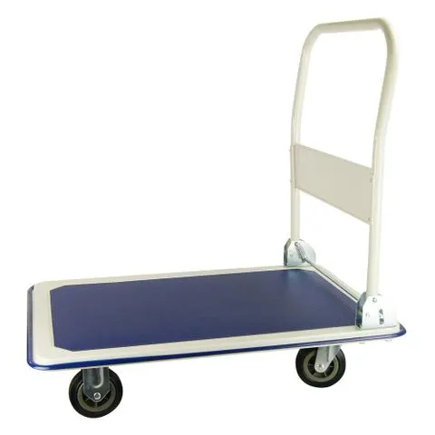
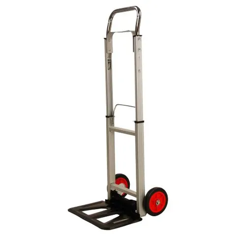
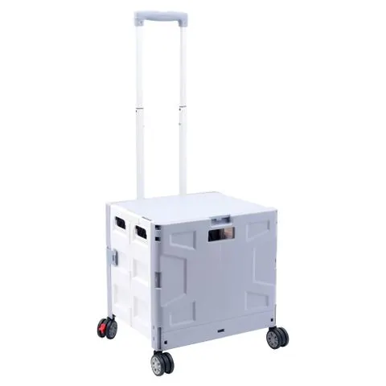

家中沒有足夠的冷藏空間怎麼辦？
訂購 180 支以上會統一以保冷箱出貨。前一天取貨後回家不需冷藏，整箱平放於陰涼處即可。
這樣隔天打開新鮮嗎？
是的，箱內有保冷劑會讓Q棒保持新鮮至隔天，若想讓客人吃冰一點的話，可以在活動前放入有包裝的冰塊，讓它更保冷喔。
箱子很大嗎？
一個箱子大小為：69 × 47 × 19 cm，若家裡有推車建議帶推車來喔。
什麼樣的推車可以？
請帶長板推車，可以保持果凍平穩地推出去，較不會有脫模、翻覆的風險。



摩托車可以載嗎？
不行。運送一定要開車來喔。
有什麼東西要歸還？
出借的東西除了Q棒售出以外，其他都要歸還喔。到時會提供物品核對清單以供核對。
聯絡我們
有任何想了解的，可直接加入 LINE 與園遊會負責人聯絡喔。